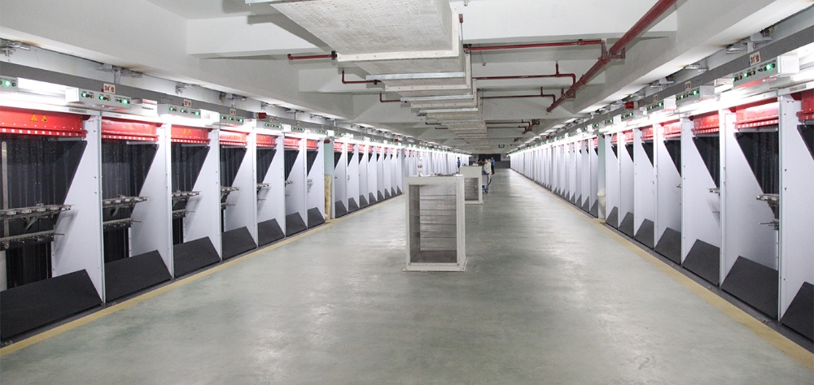
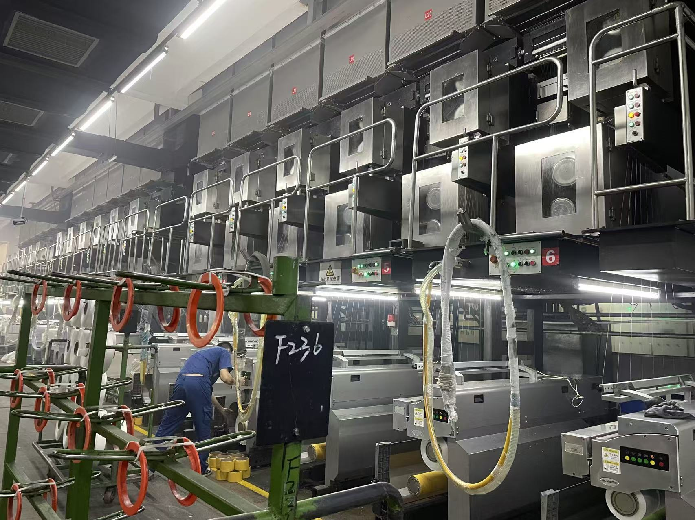

At the core of Shanyue Textile's production is the Spinning & Winding Workshop. Equipped with high-speed automated extrusion lines, the workshop melt-spins polymer chips at precise temperatures (285–295 °C) and draws them through multizone heated godet rollers. The solidified filaments are guided through high-speed winders, running at 3,500 to 5,000 m/min, onto bobbins. This process utilizes real-time online tension monitoring to guarantee consistent denier, maximum yarn tenacity, and absolute package uniformity.
Workshop Gallery
Detailed visual references for our high-speed melt spinning and precision bobbin winding operations.

High-Speed Automatic Winding Line
This shows the layout of our high-speed automatic winding lines. Multiple precision winding slots operate side-by-side to continuously collect drawn polyester filament yarn. The system automatically coordinates bobbin rotation speed and traverse tracking to ensure a uniform cross-wound build, laying the groundwork for flawless subsequent knitting and weaving.

Precision Bobbin Winding & Texturing Lines
A closer view of the vertical spinning and winding frame structure. In this area, technicians monitor the multi-position melt spinning frame where polymer melt is extruded through fine spinneret holes and drawn vertically. Heated godet rollers stretch the cooled filaments to establish high molecular orientation and tenacity before they are wound. Each position is managed by winder computers tracking yarn path tension and package geometry in real time.
Technical Performance
Quality metrics driving our spinning and winding processes.
Equipment Highlights
State-of-the-art machinery enabling flawless yarn construction.
Melt Extruder & Beam
- Closed-loop temperature zones (285–295 °C)
- High-accuracy volumetric spin metering pumps
- Optimal cross-flow quench air distribution
Drawing & Interlacing
- Multi-stage heated godet stretching rolls
- Precise draw ratio alignment (3.0× to 5.0×)
- Consistent air pressure interlacing nozzles
Precision Winding
- Continuous online bobbin tension monitoring
- Automatic doffing and transfer mechanisms
- Perfect package shoulder and package build control
Filament Product & Facility Inquiries
Get in touch with our filament department for custom specs or a physical tour.
Contact: Leo Gao
Business Manager — Filament Yarn Division
Phone / WhatsApp: +86 18605755007
Email: leogao@yarnsvc.com
General: gaofei@yarnsvc.com